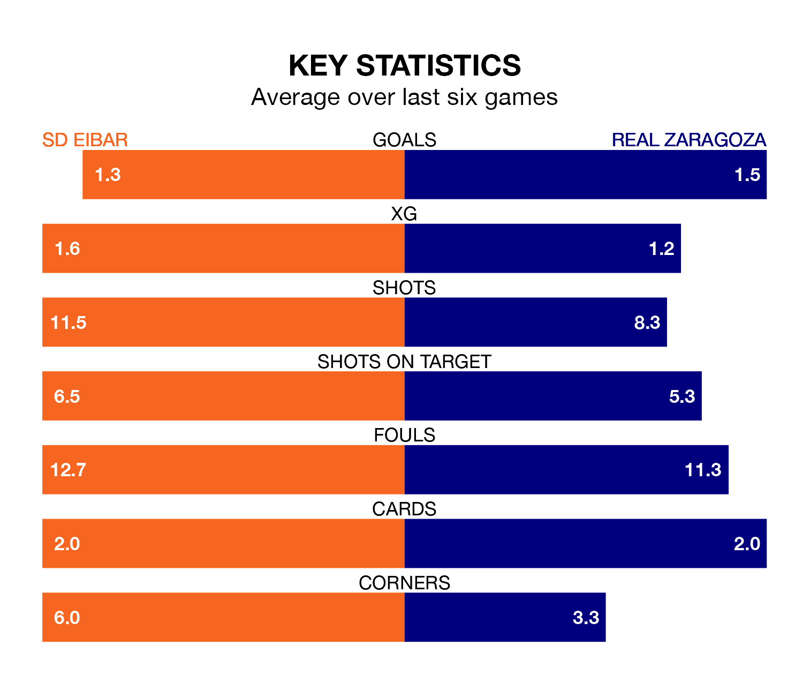

SD Eibar face a challenge to maintain their high-scoring form at home against a tight Real Zaragoza defence on Sunday.
With 41 goals in 25 games, Eibar are the top scorers in the Segunda División ahead of the 5.30pm kick-off at Estadio Municipal de Ipurúa.
They face a Zaragoza side who have scored 27 in 25 matches, but conceded only 22 goals, putting them joint-third among the league's tightest defences – only Leganés and Real Oviedo have conceded fewer goals.
Eibar are second in the table after 25 games, of which they have won 12 and drawn six, earning 42 points.
Zaragoza are eight places behind the hosts in 10th, with nine wins and nine draws putting them on 36 points.
In the last 10 years, Eibar and Zaragoza have played each other on six occasions. They won two each, and they drew twice.
On average, Eibar scored 1.0 goal and Zaragoza 0.8 in those matches.
Their last meeting was on October 21, when Eibar won 3-2 away.
In Juan Diego Molina Martínez, Eibar have one of the league's most on-form strikers so far this season. He has notched nine goals in 23 appearances, to sit seventh in the scoring charts.
His goal rate of one every 209 minutes is slightly quicker than that of Maikel Mesa Piñero, the away team's top scorer with a goal every 204 minutes, and a total of eight goals in 24 games.
Eibar are in reasonable form in the Segunda División, with three wins and two draws from their last six games.
With two wins and four draws over that period, Zaragoza's form is slightly worse – they have taken 10 points from 18, compared to the home side's 11.
Eibar's last match was on February 4, a 1-1 draw against Racing Club de Ferrol, with Jon Bautista Orgilles getting the goal for Eibar.
Zaragoza beat Sporting Gijón 3-0 last time out, on Monday, with Carlos Roberto Izquierdoz (own goal), Francho Serrano Gracia and Mesa Piñero on the scoresheet.
Updated: 11:18 (UTC), 08/02/24